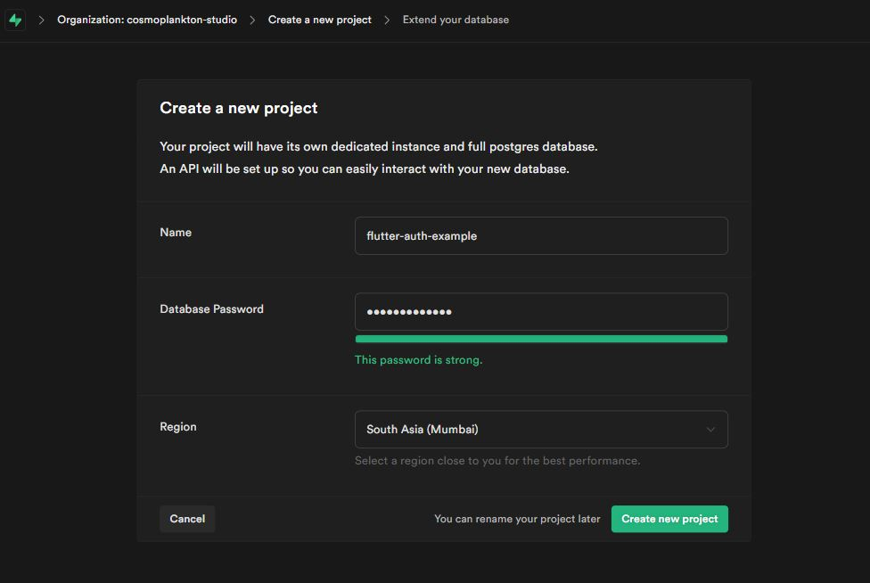
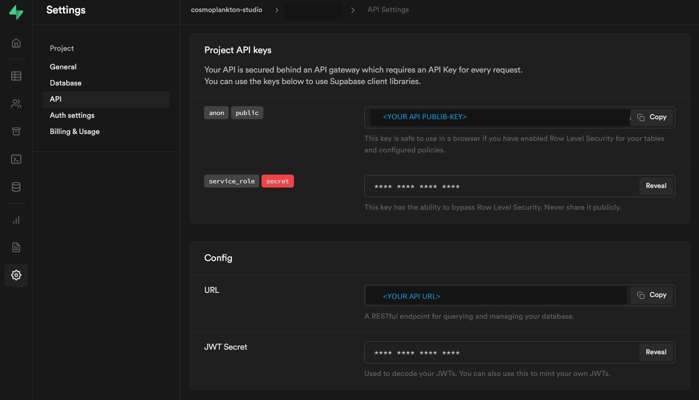
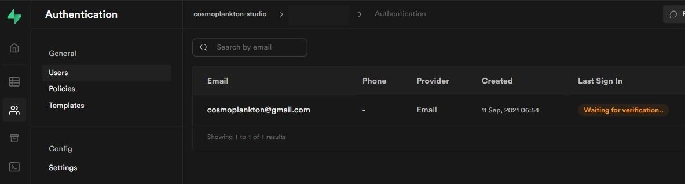
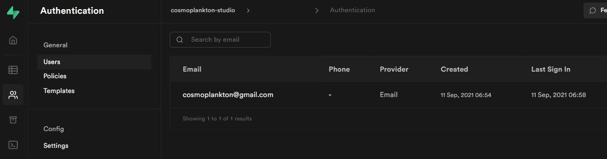

User Authentication using Supabase Flutter (Dart) Client
Supabase is an open source Firebase alternative to create backends with a Postgres Database, Authentication, instant APIs, realtime subscriptions, Storage, and Serverless (announced) functions. Currently, its managed services offer a free-account with limits those are enough to set up a personal project, a hobby project, or a MVP.
For this tutorial we will use its community supported dart-client, you could use the official javascript-client depending on your project.
Create a supabase project
 Image-01: Create New Project UI.
- Register a new supabase account using your GitHub account and create a new project.
- A project provides us with an
URLand aPUBLIC-KEYfor the app client to access supabase managed backend.
 Image-02: API details for client.
Add supabase client to the Flutter app
- Run
flutter pub add supabaseto add supabase package as a dependency to the Flutter project. - Run
flutter pub getto download the package (vs-code dart extension automatically runs this when you update and save the pubspec.yaml file).
The pubspec.yaml file will have a line like this based on the current version:
dependencies:
supabase: ^0.2.5
- Import the dart client package into the app.
- Go to supabase dashboard and get the
URLandPUBLIC-KEYfrom "Organization > Project > API Settings" page (refer to Image-02). - Create an instance of
SupabaseClientusing theURLand thePUBLIC-KEY.
import 'package:supabase/supabase.dart';
final client = SupabaseClient('URL', 'PUBLIC-KEY');
Register users using Supabase Authentication
The client object has an auth attribute that provides the different auth-services: signUp, signIn, update, etc.
- We use the
signUpservice, which returns aresponseof typeGotrueSessionResponse, to register a new user. - Depending on the auth-configuration, the user might have to complete the registration process from the confirmation e-mail.
- Depending on the auth-configuration the
responseobject could have bothuserandsessionor onlyuser.
The client pseudo-code:
import 'package:supabase/supabase.dart';
Future<String> signUp(String email, String password) async {
// Create a client instance
final client = SupabaseClient('supabaseUrl', 'supabaseKey');
// Sign up user with email and password
final response = await client
.auth
.signUp(email, password);
if (response.error != null) {
return 'Error: ${response.error?.message}';
} else {
final user = response.user;
final session = response.data;
}
return 'Success';
}
main() {
final msg = await signUp('email', 'password');
}
Registered Users
Once an user has successfully registered and confirmed the e-mail, they will show up on the Authetication page.
 Image-03: Authentication page- pending verification.
 Image-04: Authentication page- email verified.
IMPORTANT: Go through these deep-dive articles about how JSON Web Tokens (JWTs), Row Level Security (RLS), and Auth-Policies could be used across Supabase backend services. This will prepare you to better manage and secure your and your users' data.
If you liked this article and are interested in more similar articles, connect on Twitter and YouTube for updates. Thank you!